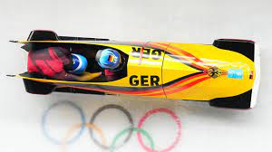

Bei den XXIV. Olympischen Winterspielen 2022 in Peking fanden vier Wettbewerbe im Bobfahren statt. Austragungsort war das neu erbaute Yanqing National Sliding Center. Der Zweierbob der Männer bei den Olympischen Spielen 2022 war der erste Bobwettbewerb in der Geschichte der Olympischen Spiele, bei dem ausschließlich ein Land auf die Podestränge kam bzw. Medaillen gewann. Die eigentlich für Februar und März 2021 vorgesehenen Testwettkämpfe mussten aufgrund der COVID-19-Pandemie auf Oktober und November 2021 verschoben werden.

| Platz | Land |
| 1 | Deutschland |
| 2 | Vereinigte Staaten |
| 3 | Kanada |